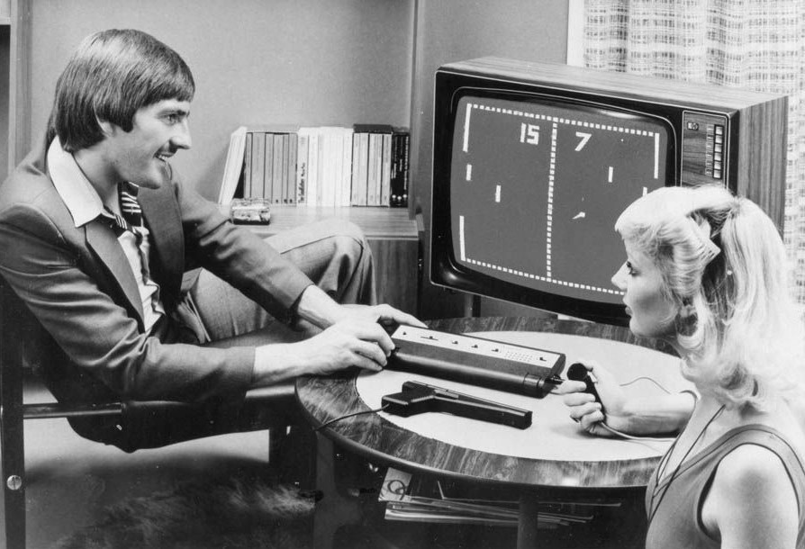

Интересные факты о компьютерах
-
Компьютерные игры в 1980-х годах
ОВ 1980-х годах в Советском Союзе фанаты первых компьютерных игр покупали не диски с ними, а журналы. Сегодняшние пользователи должны оценить преданность первых игроманов.
Нужно было купить журнал, в котором был напечатан код игры, ввести его вручную с клавиатуры, запустить и сохранить игру на тогдашний аналог флеш-накопителя – магнитофонную кассету. После такого подвига установка игры уже с кассеты выглядела детской забавой, хотя лента кассеты могла и порваться. А монитором тогда служили обычные телевизоры.